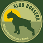

Początki naszego obcowania z tą rasą zaczynają się w 1982 roku. Wtedy to został zakupiony pierwszy rodowodowy bokser (spełnienie dziecięcych marzeń). Niestety, ze względu na umaszczenie, niehodowlany.
W 1983 roku zakupione zostały dwie miotowe siostry, które w tamtym czasie przynosiły nam wiele sukcesów wystawowych. Były nimi: żółta TERRA LIDER oraz pręgowana TAJGA LIDER. Obie sunie wydały ogólnie pięć miotów.
W roku 1986 dołączyła do nas malutka sunia,ponieważ była najmłodsza została nazwana "Maluszek" właściwa jej nazwa brzmiała KRÓLOWA KLEOPATRA NOSTRUM, fundament naszej hodowli. Była to sunia o wyjątkowej psychice i usposobieniu. Matka, babka, prababka i pra, pra...babka wielu polskich championów. W roku 1991 pozostała w hodowli HANZA EXKALIBUR Zwycięzca Młodzieży Polski, Champion Polski. Córka Królowej Kleopatry Nostrum, matka Italii Exkalibur.

Szybkie odejście ITALII, w kwietniu 1999 roku, przyśpieszyło podjęcie decyzji o nabyciu kolejnej suki OFRY LIDER, trafiła do naszej hodowli w czerwcu, pomimo, że oczekiwaliśmy już wówczas szczeniąt po wyhodowanej przez nas KORSYCE EXKALIBUR, która z kolei była córką ITALII EXKALIBUR.
19 lipca 1999 roku, z wyczekiwanego przez nas miotu, ze skojarzenia KORSYKI EXKALIBUR i VASCO VAN DE HAZENBERG przyszedł na świat późniejszy zwycięzca wielu wystaw - ODWET EXKALIBUR – cudowny pies pod względem charakteru i eksterieru. Znaleźć go można w wielu rodowodach.
Następny rok 2000 przyniósł nam kolejną sunię AMANDĘ PARABELLUM.
W roku 2001 zostawiliśmy sobie PLEJADĘ EXKALIBUR.
Rok 2002, 2003 i 2004 był dla nas pasmem sukcesów hodowlanych. Nasz pies Odwet Exkalibur uzyskał tytuł Njlepszego Reproduktora na Klubowej Wystawie Bokserów w Łodzi w 2002 roku oraz w 2003 roku na Klubowej Wystawie Bokserów w Lublinie. Klubowa Wystawa Bokserów w Lublinie przyniosła nam jeszcze jeden sukces, uzyskaliśmy tytuł Najlepszej Hodowli. Tytuł ten potwierdziliśmy w roku następnym 2004 na Krajowej Wystawie Bokserów we Wrocławiu.
W 2004 roku Plejada Exkalibur została pokryta Odwetem Exkalibur. Z tego skojarzenia zrodziła się UTOPIA EXKALIBUR. Oczarowała nas tak bardzo, że została w naszej hodowli. Była to sunia z mocną psychiką i wielkim wdziękiem jak jej przodkowie.
Boksery opisane powyżej, pomimo że nie ma ich już wśród nas, zawsze pozostają w naszych sercach, przypominając nam piękne chwile spędzone z nimi. Jesteśmy wdzięczni losowi, że dał nam możliwość obcowania z tą cudowna rasą.

Aktualnie w hodowli posiadamy syna Utopii Exkalibur, który jest wnukiem Odweta Exkalibur - DON DIASA EXKALIBUR, jest on kontynuacją naszej linii hodowlanej oraz posiadamy sunię ELIZĘ EWENEMENT.


Hodowla Exkalibur
Sławomira i Sławomir Idzikowscy
Łódź, ul. Moskuliki 28
tel. 777 - 777 - 777
